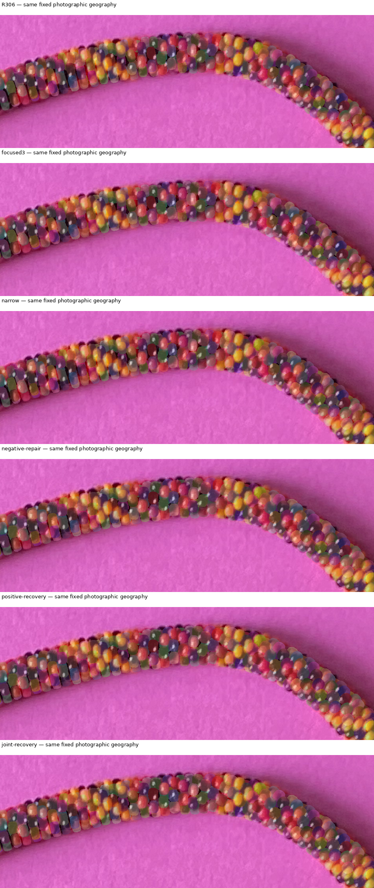

No reconstruction adopted. Isolated overlap is not identity. Cold polygon rendering is slower; cached layers accelerate local proposals by reusing unchanged bodies, and also accelerate repeated diagnostics. White isolated occupied contours, cyan visible contours, magenta enclosed bore, orange candidate core pixels hidden by neighbors.
Report · Reproduce · Timings and owner comparisons · Adversarial fixtures · Controlled experiment / Pareto IDs · Complete occlusion ledger · Same-geography before/after
| Model | Core | Best isolated candidate | Actual modeled occluders | Review |
|---|---|---|---|---|
| R306 | C-1559-0252 | 15: isolated 70.4%; visible 2.4% | 20 (119 core px), 14 (81 core px) | photographic layers · arrays |
| R306 | C-1497-0271 | 0: isolated 84.8%; visible 84.8% | photographic layers · arrays | |
| R306 | C-1477-0290 | -9: isolated 48.1%; visible 8.4% | -7 (55 core px), -8 (43 core px), -1 (30 core px) | photographic layers · arrays |
| R306 | R282-1536-0239 | 8: isolated 93.9%; visible 78.2% | 7 (39 core px), 14 (20 core px) | photographic layers · arrays |
| R306 | R282-1537-0308 | 11: isolated 66.4%; visible 16.7% | 12 (238 core px) | photographic layers · arrays |
| R306 | R282-1459-0316 | -8: isolated 57.3%; visible 57.3% | photographic layers · arrays | |
| focused3 | C-1559-0252 | 15: isolated 77.2%; visible 0.0% | 20 (152 core px), 14 (75 core px) | photographic layers · arrays |
| focused3 | C-1497-0271 | 0: isolated 97.9%; visible 97.9% | photographic layers · arrays | |
| focused3 | C-1477-0290 | -9: isolated 55.6%; visible 4.7% | -7 (96 core px), -1 (57 core px), -8 (11 core px) | photographic layers · arrays |
| focused3 | R282-1536-0239 | 8: isolated 96.0%; visible 83.3% | 14 (41 core px), 7 (7 core px) | photographic layers · arrays |
| focused3 | R282-1537-0308 | 12: isolated 72.9%; visible 72.9% | photographic layers · arrays | |
| focused3 | R282-1459-0316 | -8: isolated 61.4%; visible 57.6% | -7 (11 core px) | photographic layers · arrays |
| narrow | C-1559-0252 | 14: isolated 82.0%; visible 67.3% | 20 (43 core px) | photographic layers · arrays |
| narrow | C-1497-0271 | 0: isolated 81.2%; visible 81.2% | photographic layers · arrays | |
| narrow | C-1477-0290 | -9: isolated 53.7%; visible 5.3% | -7 (107 core px), -1 (34 core px), -8 (15 core px) | photographic layers · arrays |
| narrow | R282-1536-0239 | 8: isolated 86.5%; visible 74.5% | 7 (40 core px), 14 (5 core px) | photographic layers · arrays |
| narrow | R282-1537-0308 | 12: isolated 69.5%; visible 69.5% | photographic layers · arrays | |
| narrow | R282-1459-0316 | -15: isolated 63.7%; visible 24.4% | -14 (96 core px), -8 (20 core px) | photographic layers · arrays |
| negative-repair | C-1559-0252 | 14: isolated 93.2%; visible 71.4% | 20 (53 core px), 13 (11 core px) | photographic layers · arrays |
| negative-repair | C-1497-0271 | 0: isolated 83.3%; visible 83.3% | photographic layers · arrays | |
| negative-repair | C-1477-0290 | -7: isolated 82.3%; visible 82.3% | photographic layers · arrays | |
| negative-repair | R282-1536-0239 | 8: isolated 82.5%; visible 58.9% | 7 (88 core px), 14 (1 core px) | photographic layers · arrays |
| negative-repair | R282-1537-0308 | 12: isolated 63.3%; visible 63.3% | photographic layers · arrays | |
| negative-repair | R282-1459-0316 | -15: isolated 84.1%; visible 22.4% | -14 (157 core px), -8 (25 core px) | photographic layers · arrays |
| positive-recovery | C-1559-0252 | 14: isolated 99.7%; visible 78.6% | 20 (62 core px) | photographic layers · arrays |
| positive-recovery | C-1497-0271 | 0: isolated 85.1%; visible 85.1% | photographic layers · arrays | |
| positive-recovery | C-1477-0290 | -7: isolated 81.1%; visible 81.1% | photographic layers · arrays | |
| positive-recovery | R282-1536-0239 | 8: isolated 88.9%; visible 77.7% | 7 (38 core px), 14 (4 core px) | photographic layers · arrays |
| positive-recovery | R282-1537-0308 | 12: isolated 63.3%; visible 63.3% | photographic layers · arrays | |
| positive-recovery | R282-1459-0316 | -15: isolated 83.7%; visible 22.4% | -14 (157 core px), -8 (24 core px) | photographic layers · arrays |
| joint-recovery | C-1559-0252 | 14: isolated 99.7%; visible 78.6% | 20 (62 core px) | photographic layers · arrays |
| joint-recovery | C-1497-0271 | 0: isolated 87.9%; visible 87.9% | photographic layers · arrays | |
| joint-recovery | C-1477-0290 | -7: isolated 85.7%; visible 85.1% | -1 (2 core px) | photographic layers · arrays |
| joint-recovery | R282-1536-0239 | 8: isolated 88.9%; visible 77.7% | 7 (38 core px), 14 (4 core px) | photographic layers · arrays |
| joint-recovery | R282-1537-0308 | 12: isolated 63.3%; visible 63.3% | photographic layers · arrays | |
| joint-recovery | R282-1459-0316 | -15: isolated 98.6%; visible 3.1% | -14 (212 core px), -8 (56 core px), -7 (14 core px) | photographic layers · arrays |
